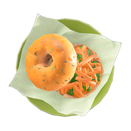

Carrot Bagel Sandwich

Description
A simple yet delightful meal consisting of freshly chopped carrots atop a lightly toasted bagel. This savory recipe gives the player five energy points, to be used when breaking rocks or relocating trees.
Ingredients
- Whole-wheat flour (2)
- Carrot (3)
Where to Obtain Recipe
- From a villager while they are cooking in their house
- In a message bottle on the beach
- The chef at the restaurant in Happy Home Paradise
- After designing a vacation home for Annalise or Nana
Further information on this recipe can be found at Nookipedia.
Return home